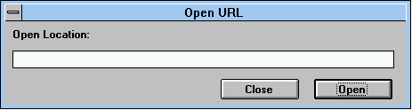
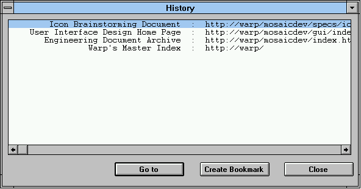
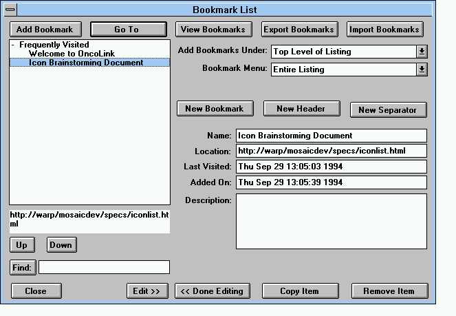
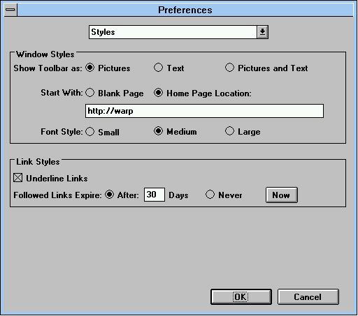
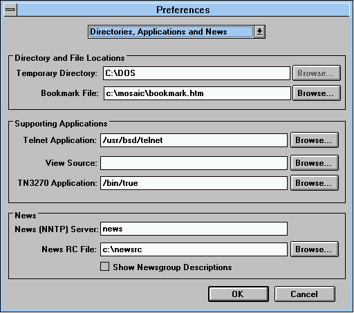
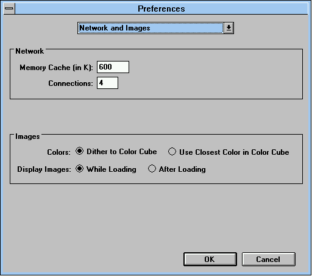
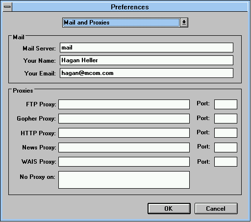
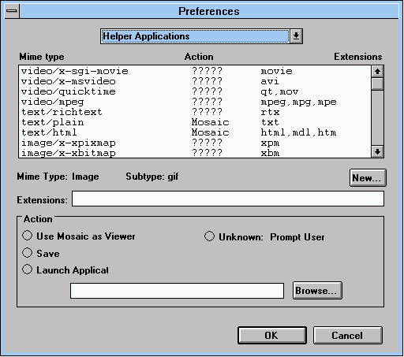

Menu items
Netscape Handbook: Table of Contents
- File
- Mail Document (dialog in
File)
- Edit
- View
- Go
- Bookmarks
- View Bookmarks (dialog in
Bookmarks)
- Options
- Styles (dialog in Preferences
in
Options)
- Directory, Applications, and
News
(dialog
in Preferences in Options)
- Network and Images (dialog in
Preferences in Options)
- Mail and Proxies (dialog in
Preferences
in Options)
- Helper applications (dialog
in
Preferences in Options)
- Directory
- Help
File
- New Window
Creates a new window and brings the default Netscape home
page into
the content area.
- Open Location...
Produces a dialog box that lets you enter a Uniform
Resource
Locator (URL) to bring the specified page into the content area. Every
page has
a unique URL that identifies its protocol, server, and file pathname.

- Open File...
Lets you select a file to open from a dialog box.
- Save As...
Creates a file whose content is the content area of the
current
Netscape page. A dialog box lets you select the file's format.
- Save Next Link As... (This feature is implemented on Windows
by holding down the shift key and clicking.)
Saves to disk (instead of bringing to screen) the page
whose link you next click on. After you click, the command is canceled.
- Mail Document...
Produces a Mail
Document
dialog
box that lets you send a
mail message and page attachment to an e-mail address you
specify.
- Print Setup... (Not on Windows; On Macintosh: Page
Setup...)
Produces a dialog box that lets you specify printing
characteristics associated with the current page.
- Print... (Not on Windows)
Prints the content area of the current Netscape page. A
dialog box
lets you select printing characteristics. In addition to Print,
the Windows
platform offers a Print Preview menu item to display the layout
of a
printed page.
- Close
Closes the current Netscape page. On Windows and UNIX, exits
the Netscape application when you close the last page.
- Exit (On Macintosh: Quit)
Closes the current Netscape page and exits the Netscape
application.
Mail
Document (dialog in
File)
The dialog box produced by choosing Mail Document in the
File menu offers the following information and options:
- The dialog box has text fields for the From: address,
the
To: address, the Subject:, and the body of the message.
- The Include Document Text button imports the text of the
current
page into the message field. The imported text is appended to any other
content
in the field and notated by a preceding greater-than (>) symbol.
- The Attach pop-up menu lets you choose the format of the
MIME
attachment: No attachment, Text, Formatted Text, or
HTML.
- Pressing the Send button distributes the mail into the
network
and closes the dialog box.
Edit
- Undo
Reverses the last action you performed, if possible.
- Cut...
Removes the current selection and places a copy on the
clipboard.
- Copy
Places a copy of the current selection on the clipboard.
- Paste
Puts the contents of the clipboard into the current Netscape
page at
the position of the selection marker.
- Clear (Macintosh only)
Removes the current selection.
- Select All (Macintosh only)
Creates a selection composed of the entire contents of the
area
occupied
by the selection marker.
- Find...
Produces a Find dialog box that lets you specify a
word or
phrase to locate within the current Netscape page. Pressing the
Find
button begins the search. If a match is found, the text is selected
and, if
necessary, scrolled to a visible position in the content area. If the
Case
Sensitive option is checked, a match can only occur when the use of
uppercase and lowercase letters is the same; otherwise a match can
occur
regardless of case. If the Find Backwards option is checked, the
search
proceeds from the selection bar toward the beginning of the page;
otherwise a
search proceeds from the selection bar toward the end of the page. If a
search
reaches the end or beginning of a page (depending on the direction of
the
search), a dialog box asks whether or not to continue the search to the
beginning or end of the document.
- Find Again (Not on Windows)
Searches for another occurrence of the text specified after
using
Find.
View
- Reload
Brings a fresh copy of the current Netscape page to replace
the one
originally loaded. The reloaded page displays changes made to the
source
page from the time of the original loading.
- Load Images
Displays the images of the current Netscape page. Typically,
images automatically load into pages. However, if Auto Load
Images from
the Options menu is unchecked when a page loads, a small icon is
substituted at the position of each image. Choosing Load Images
replaces
all of the small icons with their corresponding images. Images are
loaded from their
source files, however the page is not reloaded (links to images are
not updated from the source page).
- Refresh (Not on Macintosh)
Brings a fresh copy of the current Netscape page from local
memory
to
replace the one originally loaded. The refreshed page does not display
changes
made to the source page from the time of the original loading.
- Source...
Produces a View Source dialog box containing a page
in the
HTML (HyperText Markup Language) format rather than the standard
format. The
HTML format represents the source document used to create the content
and
content style of a page. The source document is read-only, though the
data can
be selected and copied to an application with editing capabilities. The
current
document title, URL, and HTML source listing are shown in their
respective text
fields. You can view the source listing of only one page at a time. The
Save... button produces a dialog box identical to that of the
Save
As... item from the File menu for saving the source listing
as a
file. You can specify an alternative application to view source (by
selecting a
Preference submenu item in the Options menu) that
produces a
viewer other than this dialog box (the default viewer).
Go
- Back
Brings the previous page in the history list. A history list is
a reference to a hierarchy of pages you have viewed.
- Forward
Brings the next page in the history list. If you have used
Back
or a history menu item to bring back page B, then Forward brings
the
page ahead of B in the history list. The Forward command is only
offered after using Back or a history item.
- Home
Brings the Netscape home page to the screen.
- Stop Loading
Halts the connection in progress that is bringing a page to the
screen.
- View History....
Produces a History dialog box that lists, in two
columns,
the title and URL of each page you have seen as you "most recently"
descended
from the home page. (For example, if you go from page Animal to page
Cat to
page Calico, then back to page Animal and traverse the path Animal to
Dog to
Spaniel, your history maintains only the most recent Animal-Dog-Spaniel
lineage.) The history list is sorted with the most recently viewed
pages at the
top. One item in the list is always selected. Pressing the Go to
button
brings the selected page back to the screen. So does double-clicking on
an
item. Pressing the Add to Bookmark button puts the selected page
into
the bookmark list (in the same way the Add Bookmark item works
in the
Bookmarks menu).
- History item 1
Brings the first page in the history list (each menu item
is a title of a page).
- History item 2
Brings the second page in the history list (and so on, each
menu item is a title of a page).

Bookmarks
The Bookmarks menu provides fast and easy access to your
favorite pages. Initially, the menu displays only the two items that
help you
add and modify pages in a bookmark list. However, as you add a page to
a
bookmark list, the title of the page (or any other name you wish to
supply as a
bookmark title) is appended as a menu item. Selecting the title from
the
Bookmarks menu brings the page to your screen.
Bookmarks are maintained in lists, each list is represented by a
bookmarks
file. You can maintain multiple bookmark lists, each with its own set
of titles
linked to favorite pages, though only one bookmark list can be active
at a
time. The menu item View Bookmarks... produces a
Bookmark List dialog
box offering options that allow you to build and maintain one or more
bookmark
files. Any changes you make to the active bookmark list (the one
currently
available through the Bookmark List dialog box) are saved and
available the
next time you start the Netscape application.
You can organize and customize items in the Bookmarks menu
through the
Bookmark List dialog box. Bookmark menu items can be arranged
hierarchically. The dialog box permits you to create a hierarchy by
defining
header items in the list, then inserting bookmark items indented (in
outline
form) below each header. The Up and Down buttons (arrows on the
Macintosh) control the line position and indention of items. An
item indented one deep in the bookmark list appears
as a submenu of the header in the menu. An item indented two
deep in
the list appears as a submenu of a submenu, and so on. Each indentation
of an
item in the bookmark list corresponds to the item's hierarchical
sublevel in
the menu. You can also share bookmark lists with other Netscape users by
exchanging bookmark files. Bookmark files are HTML-formatted pages.
You can create an HTML file using the Export Bookmarks button and
install an HTML file using the Import Bookmarks button.
- Add Bookmark
Adds the title of the current Netscape page to the list of
pages in the bookmark file.
- View Bookmarks...
Produces a Bookmark List
dialog box
that allows you to create and modify bookmark files.
- Bookmark item 1
Brings the first page in the bookmarks list (each menu item
is a title of a page).
- Bookmark item 2
Brings the second page in the bookmarks list (and so on,
each menu item is a title of a page).
View
Bookmarks (dialog in
Bookmarks)
The Bookmark List dialog box produced by choosing View
Bookmarks... in the
Bookmarks menu offers the following information and options:
- A field lists the bookmarks in the active bookmarks file. You
can
select
any one item in the list to view information about the selected
bookmark and to
begin editing the list.
- Press the Add Bookmark button to insert the current page
title
directly below the current selection in the list. If the current
selection is a
header item, the page title is inserted below and indented to the right
of the
header.
- Press the Go To button to bring the page specified by
the
current
selection in the list. If the current selection is not a page title,
the button
is dimmed.
- Press the View Bookmarks... button to create a new
Netscape
page
containing the list in HTML format. You can save the page using the
Save
As command from the File menu.
- Press the Export Bookmarks button to produce a dialog
box for saving the
active bookmarks file. The file is saved as an HTML-formatted page.
Enter a file name of your choosing, then press
OK (Save on Macintosh) to create a bookmarks file. You
can
exchange bookmark files
with
other users by using the Export Bookmarks and Import
Bookmarks buttons.
- Press the Import Bookmarks button to produce a dialog
box for inserting
a bookmarks file (an HTML-formatted page) into the active bookmarks
file. Choose the bookmarks file from
the dialog box, then press OK (Open on Macintosh) to
insert the bookmarks after
the last
bookmark of the active list.
- Select an item from the Menu Adds After pop-up menu to
specify the head position for new page titles added through the menu
bar.
Subsequent selections of the Add Bookmark menu item adds the
title at the
end of the list or after the specified header.
- Select an item from the Menu Start With pop-up menu to
specify
the head position for displaying items under the Bookmarks menu.
Subsequent
selections of the Bookmarks menu show the entire list or only
those items in
the hierarchy of the specified header.
- Press the New Bookmark button to insert a new item
(temporarily
titled New Item) below the current selection in the list. Enter
the
bookmark title that you wish to use in the Name field and the
new item's
URL in the Location field, then click in the list (or press
another
button)
to complete the insertion.
- Press the New Header button to insert a new header below
the
current selection in the list. Enter the name of the new header in the
Name text field, then click in the list (or press another
button) to
complete the insertion.
- Press the New Separator button to insert a divider below
the
current selection in the list.
- The Name text field contains the name of the current
selection in the list. You can edit the name in the field to supply a
bookmark
title of your choice. Click in the list to complete the edit.
- The Location text field contains the URL of the current
selection
in the list. You can edit the URL in the field. Click in the list to
complete
the edit.
- The Last Visited text shows the date that the current
selection in
the list was last viewed.
- The Added On text shows the date that the current
selection was
added to the list.
- The Description text field contains any text you wish to
supply
about the current URL selection in the list.
- Press the Up button (arrow on Macintosh) to move or
indent
the current
selection
in the
list. Typically, pressing the Up button swaps the positions of
the
current selection and the item directly above the current selection.
However,
the Up button behaves with the following characteristics: if the
current
selection is a header, the header and its sub-items move as a single
item; if
the item directly above the current selection is indented to the right
of the
current selection, pressing the Up button indents the current
selection.
- Press the Down button (arrow on Macintosh) to move the
current selection in
the
list or
reverse the current selection's indentation. Typically, pressing the
Down button swaps the positions of the current selection and the
item
directly below the current selection. However, the Down button
behaves
with the following characteristics: if the current selection is a
header, the
header and its sub-items move as a single item; if the item directly
below the
current selection is positioned to the left of the current selection,
pressing
the Down button moves the current selection one tab stop to the
left
(reverses a single indent).
- Press the Find button to search for items in the
bookmark
list
(both titles and URLs) that matches text you enter in the Find
field.
The search begins at the current selection and searches downward. The
search is
not case sensitive. When a match is found, the item is selected. If the
match
is in a URL, the URL is also selected. Pressing the Find button
again
searches for the next occurrence. If no match is found, the text in the
Find field is selected. If an item is found under a folded
header, the
header's list is automatically unfolded and the found item selected.
- The Edit (More Options on the Macintosh) button
expands the Bookmarks
dialog box
to its full set of options.
- The Done Editing (Fewer Options on the
Macintosh)
button limits the Bookmarks
dialog box
to its minimum set of options.
- The Copy Item button creates a duplicate of the current
selection
and positions the new item directly below the original.
- The Remove Item button deletes the current selection
from
the
list.

Options
- Preferences...
Presents a pop-up menu for selecting one of several
Preference dialog boxes. Each dialog box lets you configure one
of the
following Netscape feature sets (each documented on their own page):
Styles; Directory, Applications, and
News;
Network and Images
(Images, Network, and Mail on the Macintosh); Mail and Proxies (Proxies
on
the Macintosh); and Helper Applications. Each
Preference dialog has OK and Cancel
buttons.
Click the OK button to close the dialog box while accepting any
changes
in preference settings. Click Cancel to close the dialog box
without
accepting any changes. (Netscape on the UNIX platform offers a
Defaults button to reset preference items to initial out-of-box
settings.)
- Show Toolbar
Toggles the visibility of the toolbar buttons. If checked, the
toolbar buttons are visible.
- Show Location
Toggles the visibility of the location (URL) field. If checked,
the location is visible.
- Show Directory Buttons
Toggles the visibility of the Directory menu buttons. If
checked, the buttons are visible.
- Auto Load Images
Toggles the presentation of inline images as a page is brought to
screen. If checked, images embedded in a page are automatically loaded.
If
unchecked, images are not loaded and are instead represented by small
icons
that can loaded at a later time (by choosing Load Images from
the
View menu or Images from the toolbar). Unchecking this
item
increases the speed
for
bringing the text portion of a page to your screen.
- Show FTP File Information
Toggles the visibility of file information received in FTP (File
Transport Protocol) format. If checked, the FTP file information is
visible. If
unchecked, alignment of other FTP data may improve.
- Save Options
Saves any changes made to options so that the changes remain in
effect for subsequent Netscape sessions.
Styles (dialog in
Preferences in
Options)
Window Styles:
- Select one of three radio buttons Pictures, Text,
or
Pictures and text to determine the appearance of the toolbar
buttons.
The default is Pictures.
- Select one of two radio buttons Blank Page or Home
Page
Location to determine the first page to appear when starting
Netscape. The
Home Page Location choice is followed by a text field for you to
enter
the location (URL) of the page you wish to designate as the startup
page. The
default is Home Page Location with the text field containing the
URL of
the Netscape application's home page.
- Select one of three radio buttons Small, Medium,
or
Large to determine the size of the font in the content area. The
default
is Medium.
Link Styles:
- Check Underline Links to make text links in the content
area
highlight with underlining. The default is checked.
- (Macintosh only) Check Custom Link Colors to specify
your
own
colors
choices for
unfollowed and followed links If this box is unchecked, default colors
are used.
- (Macintosh only) Click in the Unfollowed link color box
to select
the
highlight
color of text links to pages you have not yet seen. The default is
blue.
- (Macintosh only) Click in the Followed link color box to
select
the
highlight
color of text links to pages you have already seen. The default is
purple.
- Select one of two radio buttons After or Never,
or press
the Now button, to determine the expiration of followed links.
The color
of an followed link reverts to the color of an unfollowed link at the
time of
expiration. The After choice is followed by a text field for you
to
enter the number of days after which a followed link reverts to an
unfollowed
link. The Never choice specifies that followed links never
revert to
unfollowed links. Pressing the Now button causes followed links
to
revert to unfollowed links immediately. The default is After
with links
expiring after 30 days.

Directories,
Applications, and
News (dialog in
Preferences in
Options)
Directories:
The Netscape application uses helper applications to access items
formatted in a way that Netscape cannot interpret on its own. Before the
helper
application
executes, Netscape temporarily stores these files onto disk. After the
helper
application is exited, Netscape deletes the files. You might use this
option if,
for example, you're default disk is short on space and you want to
store
temporary files in an alternative location.
- Lists the location of the Temporary Directory. Click its
Browse button to select a new default folder to hold the
temporary files
that are saved to disk before use by a helper application.
- (Windows only) Lists the location of the Bookmark File.
Click its Browse button to select a new default folder to
hold bookmark lists.
Supporting Applications:
You can also specify the folder to store applications that support
Netscape. Whereas helper applications provide a page with multimedia
presentation
capabilities (according to MIME type), supporting applications provide
Netscape
with connection and page formatting utilities.
- Lists the location of the Telnet Application. Telnet
provides the
means to connect to and interact with another computer using standard
Internet
protocols. Click its Browse button to identify a new location.
- Lists the location of an application to View Source (if
required
by your platform). The source viewer application displays a page's text
embedded with the HTML formatting commands. Click its Browse
button to
identify a new location.
- Lists the location of the TN3270 Application. TN3270 is
used for
Telnet connections to IBM mainframes. Click its Browse button to
identify a new location.
News:
You must specify a news server to interact with Usenet newsgroups. If
you
don't know the name of your news server, contact the service or
administrator
providing you with your Internet connection.
- Text in the News (NNTP) Server field designates the host
name for
the news server.
- Lists the location of the News RC File. This file holds
newsgroup
subscription information. Click its Browse button to identify a
new
location.
- Check Show Only Newsgroups with Descriptions to limit
the
selection of newsgroups to those with descriptions.

Network and
Images (dialog in
Preferences in
Options)
(Images, Network, and Mail on the Macintosh)
Network:
- Depending on the platform, connection options let you specify
the size in kilobytes of your cache (not on Macintosh; default of
800K on Windows), the size of a network buffer (not on Windows;
default of 2K on Macintosh), and the maximum number of network
connections (the default is 4).
Images:
- Select one of two radio buttons While Loading or
After Loading to display images incrementally while the image
is transmitted or all at once after the transmission. The While
Loading option provides the benefit of feedback as the transmission
progresses. On a fast network, the After Loading option may
complete
the load slightly faster. The default is While Loading.

Mail and
Proxies (dialog in
Preferences in
Options)
(Proxies on the Macintosh)
Mail:
- Text in the Mail (SMTP) Server field designates the host
name of
your (Simple Mail Transport Protocol) mail server.
- Text in the Your Name field provides the name used
for
your
e-mail communications.
- Text in the Your E-mail field provides your Internet
address
used for your e-mail communications.
Proxies:
Contains fields for listing the proxies of Internet services and each
proxy's associated port. A proxy is a name used to identify a related
Internet
network service so that the Netscape application may interact with the
service. A
port identification code may also be necessary to specify the
appropriate
connection to the related network service. Text fields for proxies and
ports
are listed for the following network services:
- FTP (a File Transfer Protocol)
- Gopher (for file access)
- HTTP (a HyperText Transport Protocol)
- News (a protocol for Usenet access)
- WAIS (a Wide Area Information System protocol)
- No Proxy on

Helper applications (dialog in
Preferences in
Options)
The Netscape application brings files to your computer using various
server protocols such as HTTP, NNTP, SMTP, and FTP. Each protocol may
support
different file formats. Netscape has the built-in capability to read
(interpret
and display on your computer) several formats including the HTML format
used by
HTTP servers. When the Netscape application retrieves a file with a
format that
Netscape itself cannot read, the application attempts to use an external
helper
application capable of reading the file. Netscape uses a
Preferences
dialog box to allow you to examine and configure how a file's format
maps to a
helper application. The dialog box contains several fields and buttons
to
specify MIME types (a method of differentiating file formats using a
suffix
appended to a file name), helper applications, and associated
actions.
- A scrolling text field lists the helper applications available
to the
Netscape application. Each line of the text field contains information
about one
helper application. By clicking on a line in the text field, you can
see and
modify preferences for the selected helper application in the area
below the
scrolling field.
- Enter a Mime type in a text field.
- Enter a Subtype in a text field.
- Enter Extensions in a text field.
- Pressing the New... button produces a New dialog
box with
two text fields for you to enter a MIME type and MIME subtype. Clicking
the
Okay button of the New dialog verifies the data and, if
valid,
adds the MIME information to the list.
-
- The application name and its file type is listed. Click the
Browse button to select a different application.
- (Macintosh only) Choose the application's default file type
from
the
File
Type pop-up menu.
-
- Select one of four radio buttons Save, Launch
Application,
Use Netscape as VIewer, or Unknown: Prompt User to
designate the
action performed by the helper application.
- Save produces a dialog box for saving a file to disk
after
the
file is downloaded.
- Launch Application opens the selected application using
the
downloaded file as its document.
- Use Netscape as Viewer opens the downloaded file in
Netscape's
content area.
- Unknown: Prompt User causes a notification to the
user.

Directory
- Welcome!
An welcome message from Mosaic Communications Corporation.
- What's New?
Information describing what's new on the Internet.
li>What's Cool!
Interesting pages on the Internet.
- Go to Newsgroups
A newsgroup directory.
- Internet Directory
A directory of Internet services.
- Internet Search
A search mechanism for services.
- Internet White Pages
An index to Internet members.
- About the Internet
An explanation of the Internet with links to interesting
items.
-
- How to Create World Wide Web Services
Information about commercial opportunities using Netscape
software.
- Mosaic Communications Corporation
Information about the company.
Help
- About Netscape... (Under Apple menu on Macintosh)
Product information.
- Version Information
Version and release information with instructions for
downloading
the latest version.
- Guided Tour
An exploration of Internet features.
- Handbook
An online version of the documentation
- Frequently Asked Questions
Questions and answers about Netscape.
- How to Give Feedback
A feedback form for requesting features and reporting bugs.
- How to Get Support
Information on how to sign up for individual or corporate support,
along with suggestions for alternative support such as newsgroups.
Netscape Handbook: Table of Contents
info@mcom.com
Copyright © 1994 Mosaic Communications Corporation.